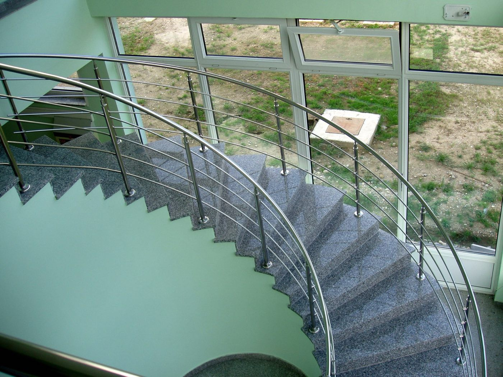
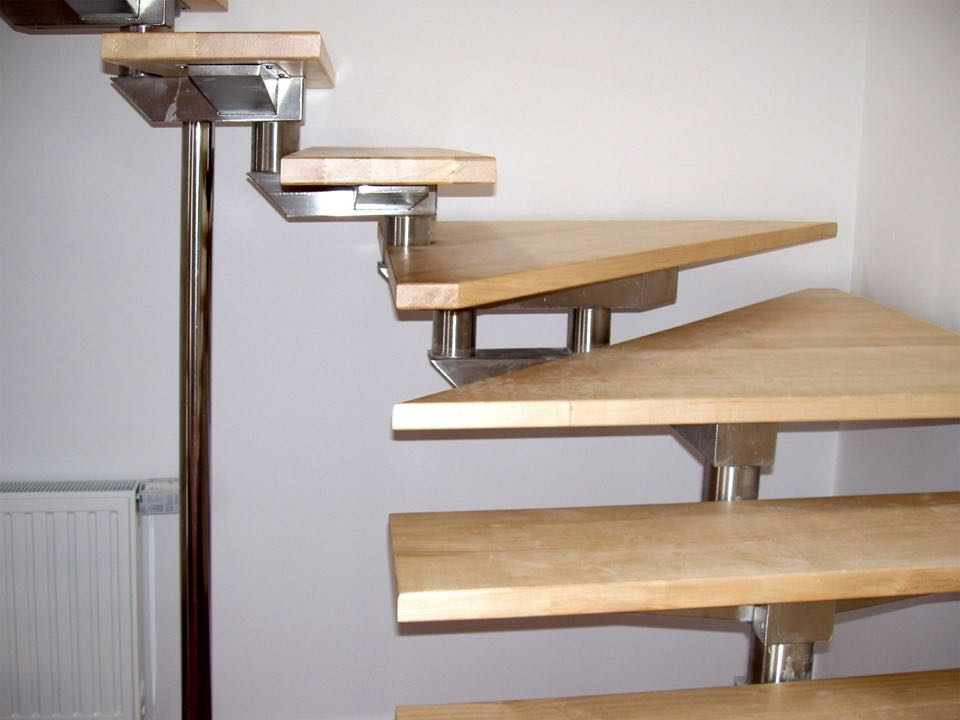
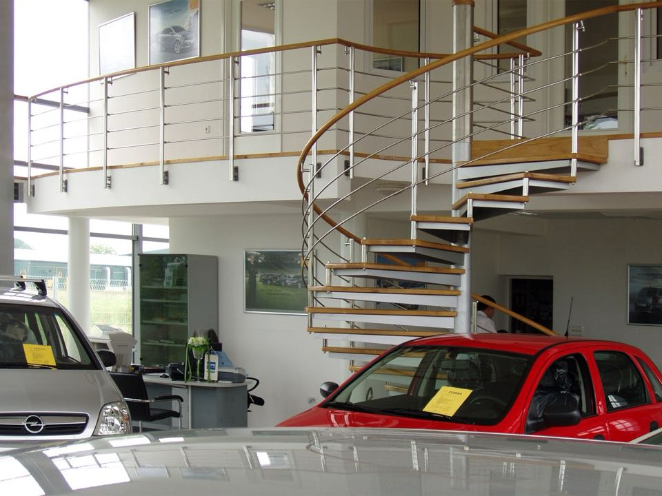

Moderna
Nastojimo da svaka ograda ima moderan dizajn i bude primjerena prostoru. Model iz naše ponude prilagođavamo prostoru prema vašim željama, pa zajedno dolazimo do najboljeg rješenja.

Od 1997. bavimo se prvenstveno inox građevinskom bravarijom: ograde balkona, stubišta, dvorišta i bazena, spiralna i segmentna stepeništa, nadstrešnice te galanterija od nehrđajućeg čelika.
Izrađujemo inox ograde za različite prostore, ulazna i dvorišna vrata, nadstrešnice i ograde bazena, a interijere opremamo namještajem, stolovima, pultovima, ručkama, karnišama, vješalicama i ostalim predmetima prema vašim potrebama.
METALAC d.o.o. Bjelovar osnovan je 1993. godine. U početku se bavio izradom metalnih konstrukcija raznih namjena, a 1995. kreće u izradu pekarske opreme od nehrđajućih materijala.
Godine 1997. počinje s izradom inox građevinske bravarije. Tada počinje i intenzivnije opremanje tvrtke tehnologijom za obradu nehrđajućih čelika. Danas tvrtka raspolaže s 350 m² proizvodnog i skladišnog prostora te potrebnim strojevima za obradu inoxa.
Direktor inž. Miroslav Druga primio je priznanje za najuspješnijeg poduzetnika u 2003. i upisan je u Zlatnu knjigu najboljih hrvatskih poduzetnika.
Nastojimo da svaka ograda ima moderan dizajn i bude primjerena prostoru. Model iz naše ponude prilagođavamo prostoru prema vašim željama, pa zajedno dolazimo do najboljeg rješenja.
Ograda treba uljepšati vaš prostor i učiniti ga ugodnijim za oko, vama i vašim prijateljima.
Čvrstoća je na prvom mjestu: ograda prije svega mora biti funkcionalna, ograditi prostor i učiniti ga sigurnim za život.
Svi spojevi i svi detalji moraju biti savršeni, u skladu s materijalom izrade. Dođite i uvjerite se.

U arhitekturi se inox (Rostfrei, Edelstahl, Stainless) često koristi, kako zbog otpornosti na koroziju tako i zbog vrlo atraktivnog izgleda. Pri izradi je, osim na vrstu materijala, važno obratiti pozornost na stručnost proizvođača i prerađivača elemenata od inoxa.
Za naše ograde koristimo isključivo najbolje elemente od inoxa, jer su nam kvaliteta i vaše zadovoljstvo na prvom mjestu.





Da. Odaberete ogradu iz naše ponude, a mi model prema vašim sugestijama i željama prilagođavamo prostoru, pa zajednički dolazimo do najboljeg rješenja.
Spiralna stepeništa izrađujemo od inoxa s drvenim ili metalnim gazištima te drvenim ili inox rukohvatima. Segmentne stepenice imaju drvena lakirana gazišta, ogradu od inox stupića povezanih inox šipkama i inox rukohvat.
Da: namještaj, stolove, pultove i šaltere, ručke za vrata, karniše, vješalice i ostale predmete od inoxa prema vašim potrebama.
Sjedište tvrtke je u Bjelovaru, Ulica Florijana Andrašeca 8.